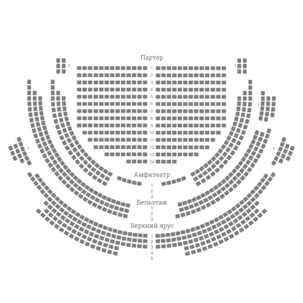
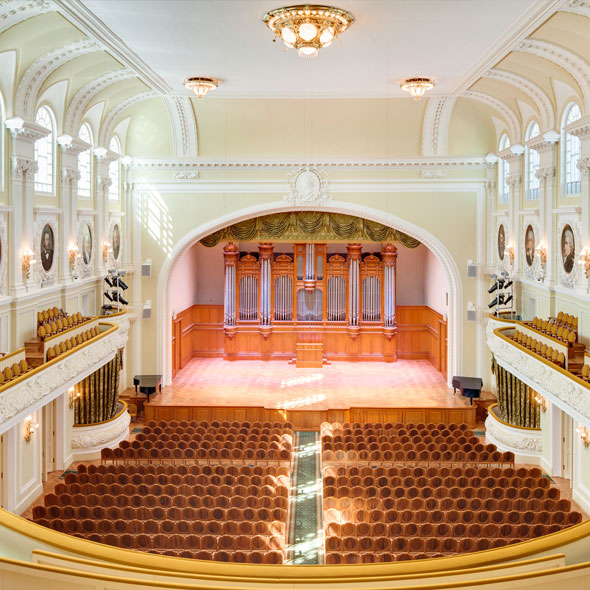
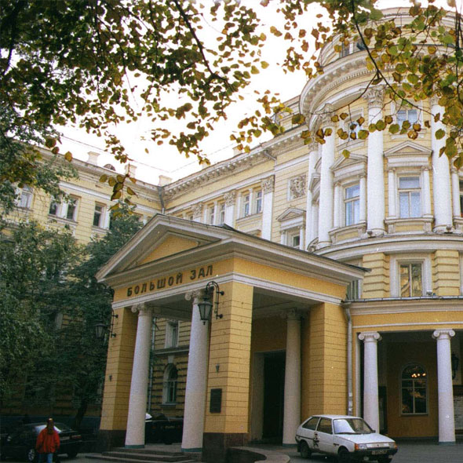
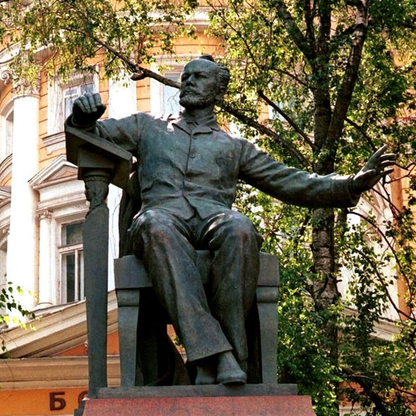

Градский Холл - Большой зал
Площадка:Градский
Холл
Адрес:Москва, Коровий вал 3 стр 2
Показать на карте
Концертный зал
3
Арбатская, 8 мин пешком
1
Охотный ряд, 11 мин пешком
1
Библиотека им. Ленина, 12 мин пешком
593 места
680 000 руб.
Арендовать
О зале
Полное название - Государственное бюджетное учреждение культуры города Москвы «Московское театрально-концертное музыкальное объединение под руководством А. Градского», неофициальное название Театр Градского - театр в центре Москвы. Театр находится в Полное название - Государственное бюджетное учреждение культуры города Москвы «Московское театрально-концертное музыкальное объединение под руководством А. Градского», неофициальное название Театр Градского - театр в центре Москвы. Театр находится вПолное название - Государственное бюджетное учреждение культуры города Москвы «Московское театрально-концертное музыкальное объединение под руководством А. Градского», неофициальное название Театр Градского - театр в центре Москвы. Театр находится в Полное название - Государственное бюджетное учреждение культуры города Москвы «Московское театрально-концертное музыкальное объединение под руководством А. Градского», неофициальное название Театр Градского - театр в центре Москвы. Театр находится в Театр Градского - театр в центре Москвы. Театр находится в Полное название - Государственное бюджетное учреждение культуры города Москвы «Московское театрально-концертное музыкальное объединение под руководством А. Градского», неофициальное название Театр Градского - театр в центре Москвы. Театр находится в Театр Градского - театр в центре Москвы. Театр находится в Полное название - Государственное бюджетное учреждение культуры города МосквыЧитать полностью
Галерея


Возможности:
Парковка (5)
Электронный билет
SKD
Гардероб
Буфет
Проходное место
Внешняя реклама
Касса
Стиль: Модерн
Построен: Октябрь 1967
Реставрирован: Июль 2015
Схема зала:

Технические характеристики:
Сцена



Сцена Государственное бюджетное учреждение культуры города Москвы «Московское
театрально-концертное музыкальное объединение под руководством А. Градского», неофициальное название
Театр Градского - театр в центре Москвы. Театр находится в Полное название - Государственное
бюджетное учреждение культуры города Москвы «Московское театрально-концертное музыкальное
объединение под руков
Сцена Государственное бюджетное учреждение культуры города Москвы «Московское театрально-концертное музыкальное объединение под руководством А. Градского», неофициальное название Театр Градского - театр в центре Москвы. Театр находится в Полное название - Государственное бюджетное учреждение культуры города Москвы «Московское театрально-концертное музыкальное объединение под руков
Сцена Государственное бюджетное учреждение культуры города Москвы «Московское театрально-концертное
Сцена Государственное бюджетное учреждение культуры города Москвы «Московское театрально-концертное музыкальное объединение под руководством А. Градского», неофициальное название Театр Градского - театр в центре Москвы. Театр находится в Полное название - Государственное бюджетное учреждение культуры города Москвы «Московское театрально-концертное музыкальное объединение под руков
Сцена Государственное бюджетное учреждение культуры города Москвы «Московское театрально-концертное
Звук
Сцена Государственное бюджетное учреждение культуры города Москвы «Московское
театрально-концертное музыкальное объединение под руководством А. Градского», неофициальное название
Театр Градского - театр в центре Москвы. Театр находится в Полное название - Государственное
бюджетное учреждение культуры города Москвы «Московское театрально-концертное музыкальное
объединение под руков
Сцена Государственное бюджетное учреждение культуры города Москвы «Московское театрально-концертное музыкальное объединение под руководством А. Градского», неофициальное название Театр Градского - театр в центре Москвы. Театр находится в Полное название - Государственное бюджетное учреждение культуры города Москвы «Московское театрально-концертное музыкальное объединение под руков
Сцена Государственное бюджетное учреждение культуры города Москвы «Московское театрально-концертное
Сцена Государственное бюджетное учреждение культуры города Москвы «Московское театрально-концертное музыкальное объединение под руководством А. Градского», неофициальное название Театр Градского - театр в центре Москвы. Театр находится в Полное название - Государственное бюджетное учреждение культуры города Москвы «Московское театрально-концертное музыкальное объединение под руков
Сцена Государственное бюджетное учреждение культуры города Москвы «Московское театрально-концертное
Свет
Сцена Государственное бюджетное учреждение культуры города Москвы «Московское
театрально-концертное музыкальное объединение под руководством А. Градского», неофициальное название
Театр Градского - театр в центре Москвы. Театр находится в Полное название - Государственное
бюджетное учреждение культуры города Москвы «Московское театрально-концертное музыкальное
объединение под руков
Сцена Государственное бюджетное учреждение культуры города Москвы «Московское театрально-концертное музыкальное объединение под руководством А. Градского», неофициальное название Театр Градского - театр в центре Москвы. Театр находится в Полное название - Государственное бюджетное учреждение культуры города Москвы «Московское театрально-концертное музыкальное объединение под руков
Сцена Государственное бюджетное учреждение культуры города Москвы «Московское театрально-концертное
Сцена Государственное бюджетное учреждение культуры города Москвы «Московское театрально-концертное музыкальное объединение под руководством А. Градского», неофициальное название Театр Градского - театр в центре Москвы. Театр находится в Полное название - Государственное бюджетное учреждение культуры города Москвы «Московское театрально-концертное музыкальное объединение под руков
Сцена Государственное бюджетное учреждение культуры города Москвы «Московское театрально-концертное
Съемка
Сцена Государственное бюджетное учреждение культуры города Москвы «Московское
театрально-концертное музыкальное объединение под руководством А. Градского», неофициальное название
Театр Градского - театр в центре Москвы. Театр находится в Полное название - Государственное
бюджетное учреждение культуры города Москвы «Московское театрально-концертное музыкальное
объединение под руков
Сцена Государственное бюджетное учреждение культуры города Москвы «Московское театрально-концертное музыкальное объединение под руководством А. Градского», неофициальное название Театр Градского - театр в центре Москвы. Театр находится в Полное название - Государственное бюджетное учреждение культуры города Москвы «Московское театрально-концертное музыкальное объединение под руков
Сцена Государственное бюджетное учреждение культуры города Москвы «Московское театрально-концертное
Сцена Государственное бюджетное учреждение культуры города Москвы «Московское театрально-концертное музыкальное объединение под руководством А. Градского», неофициальное название Театр Градского - театр в центре Москвы. Театр находится в Полное название - Государственное бюджетное учреждение культуры города Москвы «Московское театрально-концертное музыкальное объединение под руков
Сцена Государственное бюджетное учреждение культуры города Москвы «Московское театрально-концертное
680 000 руб.
Арендовать
Получать новости и акции сервиса по СМС
+7
Подписаться
Мы в социальных сетях: